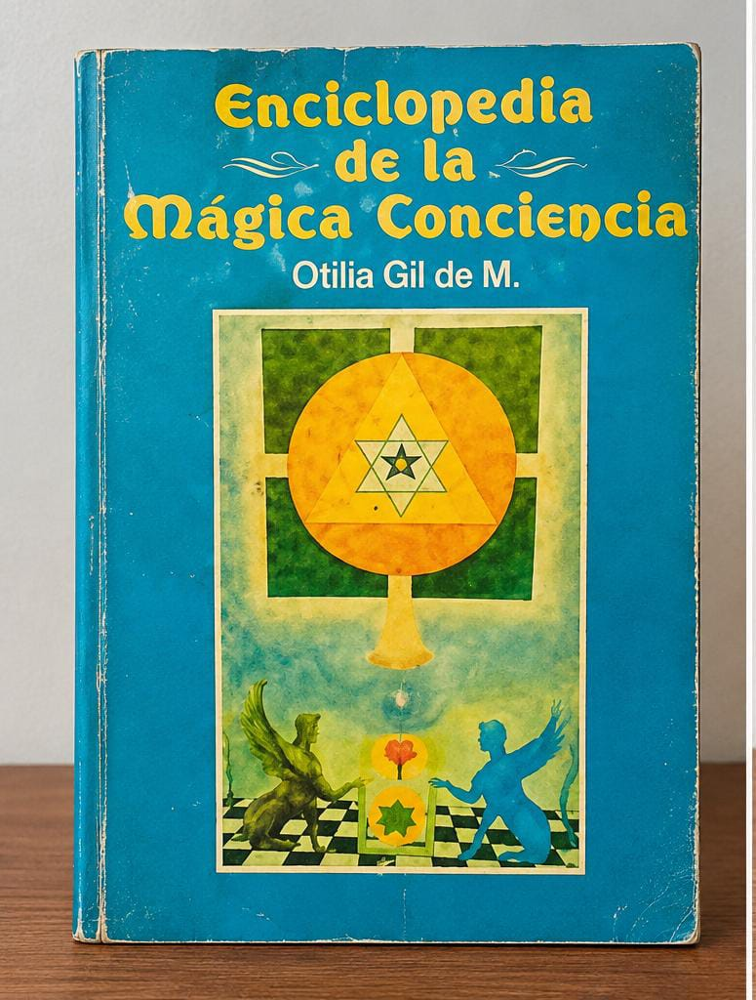

CONCIENCIA Y ESPIRITUALIDAD
Enciclopedia de la mágica conciencia
Otilia Gil de M. · Editorial Bedout, 1985
Este libro me llevó a cuestionar los límites de la conciencia y la relación entre el ser humano y aquello que todavía no comprende de sí mismo. Me llamaron especialmente la atención sus ideas sobre los sueños, el plano astral y nuestro potencial interior. Más que aceptar cada planteamiento como una verdad, me interesa explorar las preguntas que despierta.